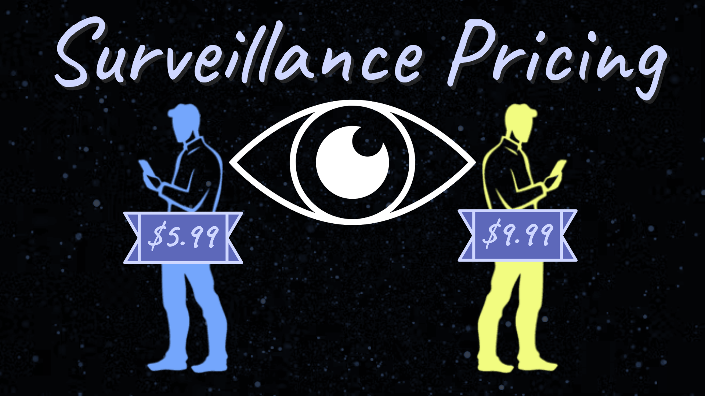

Quick Links

Stop Surveillance Pricing
Surveillance Pricing is a pricing tactic some companies use that involves tracking personal information (ex. location, gender, race, sexuality, occupation, actions, etc) in order to change the price of an item dynamically to create more of a profit at the expense of the consumer. The personalization of prices through surveillance harms consumers financially, often targetting lower-income people, and violates their privacy. Surveillance pricing is often implemented through the use of cameras and third-party tracking organizations.
Learn More Take ActionWhat Is This Club?
Consumer Rights Club (CRC) is a club that plans to teach, discuss, and contribute to consumer rights topics, debates, and awareness. CRC hopes to push for significant change in our government and society, in order to foster a healthier space for the average consumer within the US, by spreading awareness about the abuse of their rights, and taking action to protect those rights.
Learn More